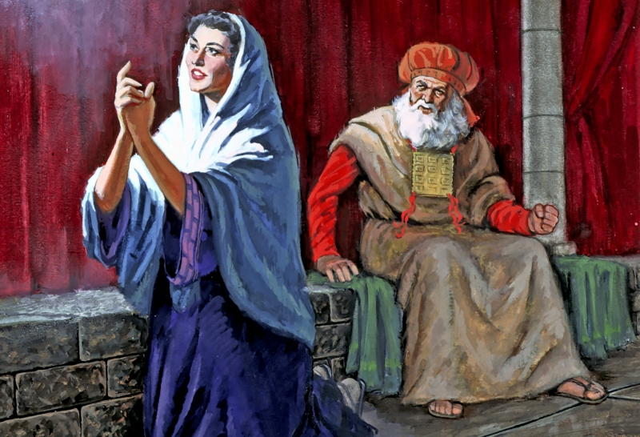

Birth of Samuel
 Samuel's birth was a special one. Hannah, Samuel's mother, was unable to have children. However, she had great faith in God and prayed for a child.
1 Samuel 1:10-11God heard Hannah's plead and gave her a son, and after she weaned him, she brought Samuel to the temple to stay with Eli.
10In her deep anguish Hannah prayed to the Lord, weeping bitterly. 11And she made a vow, saying, “Lord Almighty, if you will only look on your servant’s misery and remember me, and not forget your servant but give her a son, then I will give him to the Lord for all the days of his life, and no razor will ever be used on his head.”
God Calls Samuel
 When sleeping, Samuel hears a voice calling to him, “Samuel!” He runs to Eli to see what he wanted, but Eli tells Samuel
that he did not call him and that God may be calling him. He tells him to answer God. When Samuel does, God tells him
that he was going to bring judgement to Eli’s household. After this message, God continues to talk to Samuel, and
people realize that he is God’s chosen prophet.
When sleeping, Samuel hears a voice calling to him, “Samuel!” He runs to Eli to see what he wanted, but Eli tells Samuel
that he did not call him and that God may be calling him. He tells him to answer God. When Samuel does, God tells him
that he was going to bring judgement to Eli’s household. After this message, God continues to talk to Samuel, and
people realize that he is God’s chosen prophet.